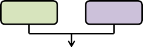
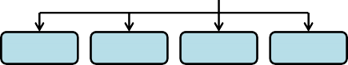
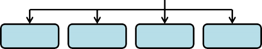
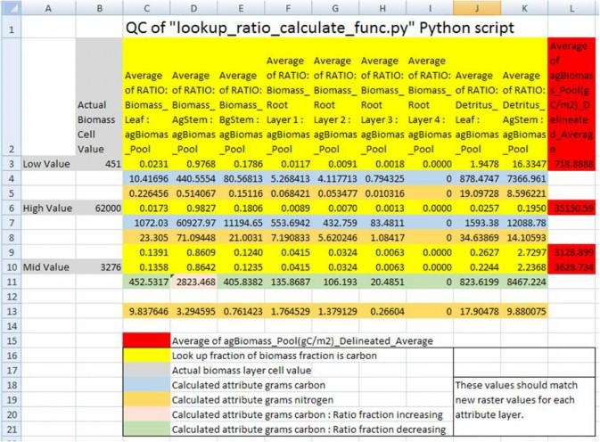

+
Appendix 3: Creating Initial ASCII Grid Chemistry Spatial Data Pools
Initial chemistry or nutrient pools are created through a series of transformations of above ground Biomass to each of the respective spatial data pools. These transformations are defined by relationship ratios (fractions) each pool has to "real" or estimated measurements of Biomass (g/m²) for the study area.
37 VELMA Simulator spatial data pools will be created from this one raster grid Biomass layer. See Table 1 for the complete list of initial layers that will be created. Each spatial data pool layer will have its own corresponding Grid ASCII (.asc) map file upon completion of the Python script. These Grid ASCII (.asc) map files will be used as inputs to VELMA for initializing the map disturbance events.
Figure 1 describes the internal processing flow, inputs, and outputs of the script. Figure 2 describes the calculations and quality control of the internal Python processing.
Software Requirements
- ArcGIS 10.0 or higher with "Spatial Analyst" license
- NumPy package installed, for the Python version used by ArcGIS 10.X
- IDLE - Python's Integrated Development Environment installed
File Requirements for Data Processing
- Raster above ground biomass of the study area
- Unit type - Carbon grams / m²
- ".tif" extension
- Raster has been clipped and snapped to same dimensions as the Grid ASCII map of DEM data that the simulation will use.
- Summary Biomass to ratio pools file
- ".csv" comma delaminate format
- No headers
- Biomass values (stand age / mass) is in the first column
- Pool ratios values in subsequent columns (quantity 37)
- Column arrangement /order is known for the ratios
Setting up Python Script for Data Processing
The script is set up in two general sections, "User defined inputs" and "Processing functions". "User defined inputs" is where inputs, outputs, and column order will be defined or edited. Changes to the "Processing functions" section of the Python code should be avoided.
Note
While editing "User defined inputs"
- All file and folder paths need to be enclosed in double quotes: "C:/Temp/Biomass/"
- All paths in Python use a "/" instead of the DOS "\"
- Folder defined paths need to end in "/" "C:/Temp/Biomass/"
- File defined paths need to end with correct extension "C:/Temp/Biomass/C_g_leaf.tif"
- Ensure that all final output working directories are the same
Note
Biomass to ratio pools file
- Column arrangement must be maintained as noted above
Editing the Python Script
- Right click the "lookup_ratio_calculate_biomass_func.py" script and click "Edit With IDLE"
- Editing within the "User defined inputs" section
- Edit all path variables for:
- "biomassLayer" - Biomass file
- "inputPath" - Main output directory
- "massRatio" - ".csv" Summary Biomass to ratio pools file
- Ouput rasters files, for each of the velma attributes - ".tif" extension
- Column number of pool ratio to biomass - Order specific
- Carbon to nitrogen ratios
- Raster attributes
- xllcorner
- yllcorner
- cellsize
- nodata
- Pres Ctrl+S to save the file
- Press F5 to run!
Note
Processing time is very dependent on processing power and the size of your study area. For example the Blue River, in Oregon, had a study grid of ~350,000 cells and took 7-12hours to complete all 37 pools. The Python shell will print updates of pool processing steps, and say "All Done!" when it's done.
| Table 1. Initial spatial pools derived from ratios to above ground biomass (C g/m^2) | ||
| Spatial Data Pool Name | Layers | Unit Type |
|---|---|---|
| BIOMASS_AG_STEM_N | 1 | N g/m^2 |
| BIOMASS_BG_STEM_N | 1 | N g/m^2 |
| BIOMASS_LEAF_N | 1 | N g/m^2 |
| BIOMASS_ROOT_N | 4 | N g/m^2 |
| DETRITUS_AG_STEM_N | 1 | N g/m^2 |
| DETRITUS_BG_STEM_N | 4 | N g/m^2 |
| DETRITUS_LEAF_N | 1 | N g/m^2 |
| DETRITUS_ROOT_N | 4 | N g/m^2 |
| DOC | 4 | C g/m^2 |
| DON | 4 | N g/m^2 |
| HUMUS | 4 | N g/m^2 |
| NH4 | 4 | N g/m^2 |
| NO3 | 4 | N g/m^2 |

 
Figure 1. Process flow diagram of ratio (fractions) processing of "observed" above ground biomass (g / m²) to thefinal nitrogen (g / m²) spatial data pools for VELMA's initialization of disturbance events.
Figure 2. Quality control check of Python script's dynamic conversions of "observed" above ground biomass (g /m²) to the final nitrogen (g / m²) spatial data pools. Conversion of biomass (g / m²) to the final nitrogen (g /m²) were made through an intermediate step of converting mass to carbon (g / m²), and then using different C toN ratios for each pool to calculate the final nitrogen pools. Fractions (ratios) of spatial pools change both inthe positive and negative direction as a forest ages or increases in total biomass. Ratio pools can increases ordecreases between stand age increments, and the calculations of these intermediate biomass observational valuesmust reflect this dynamic nature of changing ratios between time steps. Intermediate values of biomass, thosethat land in between time step years, were therefore linearly interpolated between the time point bounds.Spatial map ASCII grid values for each of the 37 pools should then backward match ratio conversions and final Cto N calculations to the original "observed" above ground biomass. (Only a partial list of pools is displayedhere).
Example: A mid biomass cell value at B10 = 3276 (g / m²) and is part way between stand age values at L9 and L10.It's above ground stem carbon mass fraction increases from 0.8609 (D9) to 0.8642 (D10). So its fraction stemmass (column D) should increase as its percentage difference moves from L9 towards LD10. Conversely, for all theother pool attributes, its percentage difference would increase as its fraction moves the opposite directionfrom rows 10 to rows 9.